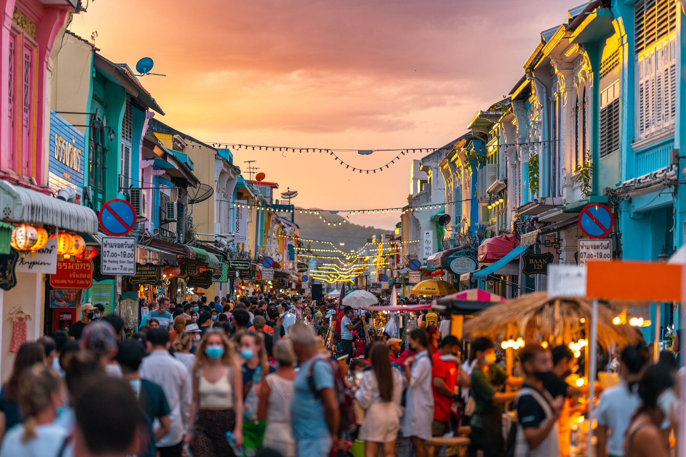

Playas Paradisiacas
Descubre las playas de Phuket, desde la animada Patong Beach hasta las tranquilas playas de Kata y Karon
ver más
Descubre las playas de Phuket, desde la animada Patong Beach hasta las tranquilas playas de Kata y Karon
ver más
Recorre sus calles históricas, edificios de estilo sino-portugués, mercados, cafés y tiendas tradicionales.
ver másConocé los patios y mercados en donde podés disfrutar de la mejor gastronomía de la ciudadExplorá las famosas islas Phi Phi, disfrutá del snorkeling, el buceo y los paisajes del mar de Andamán.
ver más